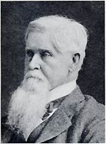

|

|

|
|
|
Known as "the financier of the Civil War," Jay Cooke was the
most influential investment banker of his day. Born in
Sandusky, Ohio to a prosperous family (his father was a
lawyer, a businessman, and a politician), Cooke started his
working life as a clerk in a dry goods store at age
fourteen. In 1838 his brother-in-law offered him a similar
position in Philadelphia, but after the company's failure
and a short stint as a hotel clerk, he moved back to
Sandusky.
In 1839, Cooke began his long career in the banking
business with a position at E.W. Clark & Company. His
skills soon rapidly advanced him up the corporate ranks. By
age twenty-one, he was made a full partner in the firm. In
1844 he married Dorothea Elizabeth Allen, sister of the
president of Allegheny College in Pennsylvania where his
brother Henry was a student.
Cooke went on to become a successful investment banker
with E.W. Clark & Company, which helped to finance the
Mexican War and a few railroad companies. The firm went
bankrupt during the financial panic of 1857, and Cooke
retired. The Civil War would soon provide new opportunities
for him.
In 1861 as the war broke out, Cooke ended his brief
retirement and opened his own firm, called Jay Cooke &
Company. Vigorously and shrewdly marketing Civil War bonds,
he made a great success of the firm. Using a patriotic
advertising campaign, Cooke convinced Americans to invest in
their government during the darkest days of the War. The
money used to purchase these bonds helped to keep the War
effort alive for the Union, particularly when resources were
most desperately needed.
Following the War, Cooke expanded his investments into
new ventures. The largest of these was the Northern Pacific
Railroad, a new transcontinental railroad that was to run
from the Great Lakes to the Pacific Ocean. Cooke needed to
raise $100,000,000 for the railroad, and he sought both
American and European investors to back the scheme. Money
was not easily forthcoming, and the investment quickly
turned bad because there was not enough rail traffic or
people along the line for the road to attract new investors.
Cooke spent unwisely in order to keep the project alive,
and on September 18, 1873, his company went bankrupt.
The failure of Jay Cooke & Company, which was the leading
brokerage firm in the country in 1873, played an important
role in ushering in the Panic of 1873 and the depression
that followed. Cooke afterwards spent a few years away from
the world of banks and finance, only to return once more as
an investor in silver mines and real estate in Minnesota.
He proved to be a success a final time, purchasing, among
other things, an estate near his adopted city of
Philadelphia. He spent the last years of his life living
with his daughter and her family after converting his estate
into a school for girls.
Cooke's influence extended far beyond his own lifetime.
His innovations in investment banking and marketing of war
bonds set precedents that resonated well into the next
century.
Source: Joan Waugh, ed., Facts on File Encyclopedia of American
History: Civil War and Reconstruction, 1856 to 1869 (New York: Facts on
File, 2003), 81.
|